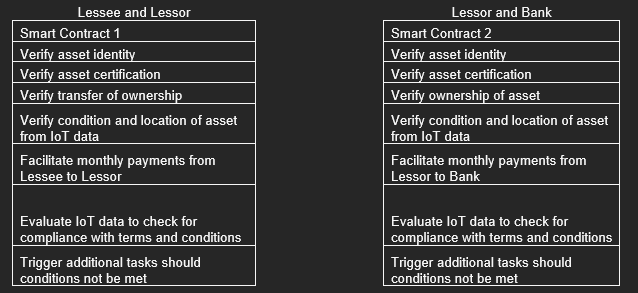

Consortium blockchain to track and trace assets for finance lease
Assignment Topic
You intend to create a solution that uses a consortium (permissioned) blockchain to track and trace assets for finance lease. Finance lease is a type of commercial lease in which a finance company is the legal owner of an asset, and the user rents the asset for an agreed-upon period of time. In this legal contract, the leasing company, usually the finance company, is called the lessor, and the user of the asset is called the lessee. When a lessee enters into this agreement, he/she has operating control over the asset. The lessee takes responsibility for all the risks and rewards associated with the ownership of the asset.
A finance lease has the following steps:
Step 1: The lessee selects an asset that he/she requires for a business.
Step 2: The lessor, i.e. the finance company, purchases the asset.
Step 3: The lessor and lessee enter into a legal contract in which the lessee will have use of the asset during the agreed upon lease.
Step 4: The lessee makes a series of payments for the use of the asset.
Step 5: The lessor recovers the cost of the asset plus interest.
Step 6: At the end of the lease agreement, the lessee has the option to acquire ownership of the asset.
Two (2) critical issues in finance lease need to be addressed if it is realised in a decentralised blockchain. First of all, the lessor may lose the asset if the lessee sells the asset and runs away without paying to the lessor in the beginning. Second, the lessor may need to prove ownership and status of assets in order to borrow money from a bank, but the lessor could fake a lot of assets that do not exist in reality in the system.
Suppose you can install a tamper-resistant smart IoT device on each asset, and these IoT devices can connect to Internet. They can also perform cryptographic computations.
Your objective is to design a blockchain-based solution to address the above two (2) critical issues. This blockchain system should be able to support multiple lessors and banks.
1. What techniques should be used in your blockchain-based finance lease system to address the two critical issues and guarantee blockchain security? Appraise the goals of these techniques.
2. Determine the process of the decentralised finance lease application, including all participating entities (lessor, lessee, bank, IoT device).
3. List at least three (3) types of private information that should be protected in the system. Briefly describe a privacy-preserving scheme for the above finance lease application using suitable privacy-preserving techniques.
Introduction
A Finance lease is a type of commercial lease in which a finance company is the legal owner of an asset and rents the asset for an agreed period. In this legal contract, the leasing company, called the lessor, and the user of the asset, called the lessee enters into an agreement where the lessee has operating control over the asset.
A consortium blockchain is a hybrid form of public and private blockchain. It allows for multiple organizations/businesses to participate together, albeit with different access rights and access to information. These organizations manage the platform.
Unlike public blockchains where anyone can validate blocks, a consortium blockchain employs a small number of trusted parties as validators. Every node can write and read transactions, but no one node may add a block without majority consensus.
Advantages of using Blockchain technology with Internet of Things
Smart contracts between lessor and lessee: Terms of the leasing agreement can be formalized digitally allowing for automation of payments and verification of the condition of the asset or machine
Smart contracts between lessor and banks. Terms of finance can be formalized digitally and allow for revocation should specific conditions not be met. Transfers of payment could also be automated according to contract terms.
Consensus Mechanism: New transactions, for example new lease agreements can be added on to the network after verification. Validators/miners verify transactions before they can be added on to the ledger.
Distributed Ledger: All data is shared by participants in the network. Participants see the same data through the network.
Provenance: A complete history of the transactions is available. This allows for tracking and tracing of assets to prevent duplication or fictional asset creation, and to track asset ownership changes.
Immutability: Data stored in blocks is immutable and cannot be changed or tampered.
Integration of IoT data into smart contracts. IoT devices can transmit relevant information for example, manufacturing output, energy use, location. This data can be transmitted to smart contracts to verify the pre-agreed conditions on asset use.
IoT devices transmits data real-time about asset/machinery events and incidents into a blockchain node. Smart contracts can be coded to share these events of data to relevant nodes and participants as specified in the smart contracts.
Solution Mechanism
The organizations involved are Lessors, Lessees, and banks.
Banks are primarily concerned about the authenticity of assets and whether the lessors indeed own the assets. Malicious lessors could provide fictitious records when borrowing money and this would encourage Banks to minimize their risk and exposure to unknown lessors.
Lessors are concerned about non-payment from lessees and unauthorized sales of their assets. They may also be concerned about how the assets are used and whether the asset value is retained by the end of the lease agreement. Specific conditions about equipment use and proper maintenance may be required in the agreement to ensure that the equipment can maintain some resale value by the end of the lease agreement.
Data recorded on the blockchain help lessors estimate the value of the asset at the end of the agreement, making it easier to decide whether to re-lease or dispose the asset.
IoT devices may send operational data from equipment, including hours of operation, operational efficiency or events of faults and operational failures. This data gets recorded into the Blockchain directly and serves as an immutable operational record. Because each maintenance record is written to the ledger with a timestamp which is encoded into each block, malicious parties would be unable to fake information on the state and condition of the asset.
Lessees would want to lower the cost to return the equipment back to the lessor and ensure that they are not penalized unfairly by lessors for any unreasonable damage claims at the end of the lease agreement.
Real time and accurate information on equipment condition and maintenance can serve as an immutable record on the state and condition of the asset to prevent any one-sided claims from the lessor.
To address the problem of trust between Lessor and Lessee, and between Lessor and Bank; 2 smart contracts in both directions can be implemented to run automatically upon the creation of any new lease agreement.
Smart contracts allow for the encoding of conditions and events that are agreed between the two parties. They independently execute tasks by examining changing conditions and applying them to the contract’s embedded rules.
The integration of IoT data to provide accurate real time information on the state and condition of the asset/equipment would be beneficial to the execution of these smart contracts. For example, if a lessee attempts to resell his leased equipment, the tamper proof IoT device will pick up changes in location and usage and send the updated data to the network. Similarly, any misuse of equipment that may deteriorate the condition and potential value of the equipment would also be picked up and may cause the smart contract to autonomously revoke the lease agreement or increase the payment amounts needed by the lessee.
Similarly, any data on the equipment/assets that reveal a deviation from the information given by lessors may also trigger the smart contract to revoke the loan agreement or impose higher payments on behalf of the bank.
Real-time IoT data is fed into smart contracts, which specify the terms and conditions agreed between parties. This is evaluated frequently and any events in breach of the terms may trigger additional functions in the smart contracts to penalize the party breaching the terms.
Smart contracts could be designed to include the below functions:

A consortium blockchain would have an identity certification authority to grant permission to allow new users and nodes to participate on the blockchain. This may also be followed by a consensus requirement by all nodes for the addition of any new nodes to the network.
In a permissioned environment, trusted parties are selected by a central authority and authorized to verify transactions. Unrelated parties are excluded from the verification process thereby preventing malicious collusion and avoiding unauthorized access to transaction information. Although transaction information is still posted to the ledger, irrelevant parties are limited in what data they can read from the blocks.
Since only a limited number of parties can verify transactions, the consensus on validated transactions can be reached quicker, and validators which do not verify transactions honestly would get their validating rights revoked by the central authority.
Because verification and consensus are restricted to consortium members, the ability to read/write data can be permissioned and restricted to members only. This ability to set permissions for different audiences ensure that private data relating to transactions are only shared between parties relevant to the transaction.
IoT devices collect data about equipment performance, energy utilization, fault detection, and maintenance when sensors are attached to equipment and systems. These sensors can automatically transmit information such as existing location, running status, condition, possible malfunctions to the blockchain.
Typical IoT devices may include:
GPS tracking tags.
Bluetooth Low Energy transmitters.
Energy sensor trackers.
Smoke and monoxide detectors.
Process Flow
Consortium blockchain is initiated and the administrator invites and approves participants in the business network ie businesses using the asset (lessees), finance companies (lessors) and banks or other lenders (Banks)
Each invited party generates an entity identifier and stores its identity certificate on the network.
Finance companies (lessors) generates an asset identifier and stores the asset identity certificate on the network.
Lease agreements are negotiated offline between parties and the hashes of the digital agreements are uploaded to the block
Terms and conditions for the lease agreement are coded into Smart Contracts along with relevant asset usage requirements. Breaches for any terms will trigger penalty/recovery actions to be executed automatically by the smart contract
When IoT devices are switched on for the first time, a private/public key pair is computed and generated by the device. The public key of the device is registered on the blockchain, and the smart contract will use the device’s public key to verify the on-chain data provided by the IoT device.
When an asset/equipment is used, the IoT device captures its real-time status, condition and events and signs it via its private key. This data is sent to the relevant smart contracts to check for compliance with the contract terms and conditions.
In cases where contract terms are breached, a special event notification is sent to the blockchain by the smart contract. The bank or lessor may then enforce penalties to their counterparty
When all conditions are met as per agreement (asset condition and payments), the parties verify and updates the transaction. This event is then shared to all network participants.
The types of private information that should be protected in this system include:
The identity and business activities of lessor
The identity and business activities of lessee
Transaction information pertaining to the agreement which includes the type of equipment leased, the number of equipment, and the cost of the agreements and payment terms agreed
Real-time information relevant to the equipment/asset, for example location, operational efficiency, manufacturing output, maintenance records and energy usage (contributed by IoT devices)
Major risks for IoT devices include the following:
1) Tampering of the physical IoT device:
• Devices may be cloned or substituted during installation.
• Security parameters could be modified to transmit inaccurate data.
2) Communication between IoT devices and between device to network:
• Eavesdropping attack could happen if communication channels are not sufficiently secure
• Man-in-the-middle attack during key exchanges when data is transmitted to the network
• Routing attacks and denial-of-service attacks
3) Private data related to the operational efficiency and condition of the equipment could be intercepted by unauthorized parties
Public Key Cryptography
Due to its small form factor, the computational power of IoT devices is limited and may face challenges when implementing the same standard public-key cryptography used by the blockchain.
For example, the Rivest-Shamir Adleman (RSA) algorithm is a commonly used cryptographic scheme but requires a high amount of power to implement.
When choosing a cryptographic scheme for an IoT device, the following factors should be considered:
The Computational Load. Due to its small form factor IoT devices have a limited computational processing power. Since these devices only perform specific functions, they are usually fitted with application specific integrated circuits (ASICs) to manage computational tasks
Memory Requirements. IoT devices are not built with a lot of memory space.
Energy Consumption. Most IoT devices are only powered by batteries. Thus, a cryptographic scheme with lighter computational requirements should be selected to reduce energy consumption
For these IoT devices, the Elliptic Curve Cryptography (ECC) scheme called ECDSA could be implemented, which is lighter in computational and power requirements.
Similarly, standard hash functions used in blockchain like KECCAK-256 or SHA-256 may not be appropriate for use by IoT devices due to its heavy computational load and power requirements. Instead, lighter hash algorithms like AES-hash could be used by IoT devices due to its lower power requirements.
In a Blockchain system, anonymity is implied but not assured. Devices and participants in the network can be identified by their public key or their hash. This is particularly concerning for IoT devices as these devices store and transmit sensitive pertaining to the asset and asset owners/users. A consortium blockchain with only invited participants would address these concerns with a central authority limiting participation to only authorized participants. However, there could also be instances where an attacker could disguise itself as the central authority. This problem could be addressed by requiring the central authority to execute a smart contract to add any new node. This can be followed by a consensus requirement by all nodes for all any changes to be effective.
Consensus Mechanism
Instead of Proof of Work (POW), a Proof of Authority consensus could be employed for a consortium blockchain.
Proof of Authority (POA) is a consensus protocol that empowers a designated group of participants with the authority to validate transactions. The PoA protocol leverages trust, where validators stake their reputation to the system. In this consensus protocol, a small group of trusted nodes are selected to confirm and add blocks to the distributed ledger.
The authentication process involves:
verifying the source of the block and increasing the reputation point of each node that performs the authentication.
A node that conducts false authentication will lose reputation points and be converted to a normal node
Validators broadcast the completed block across the network, with all nodes updating their versions of the distributed ledger.
Proof of Authority would be conducive for a blockchain with IoT devices as it does not require heavy computation requirements.
Implementing Privacy for Lessor and Lessee transactions
Ring Signatures
When the lessor and lessee create a new lease agreement, this initiates a digital process where both parties need to sign off using their digital signatures. As every transaction is recorded on the blockchain along with the public addresses of participants, this does not provide participants with perfect anonymity. By analysing the transactions, malicious actors can infer the type and value of equipment leased, along with the frequency and the value of the transactions. In this context, businesses may wish to conceal their activities for fear of leakage of their business activities and strategies to competing companies.
The use of ring signatures can provide users some level of anonymity and transaction un-linkability. Ring signatures enable users to hide behind a group of users without revealing any significant information on their identity. By randomly selecting a group of user public keys, the ring signature scheme allows for the actual participant to sign off in secret while using other public keys as decoys to make detection difficult. Further, no formal collaboration is required between users in the network and the participant can independently use his private keys to sign off on messages on behalf of the group without prior consent or knowledge.
It will be infeasible for malicious actors to guess the identity of the participant since any member in the group can potentially be the true signer. For block validators, they will just need to verify that the true signer of the transaction possesses the valid private keys that ensure that an authorised participant had signed the message.
The use of ring signatures allows participants to hide in a crowd by masking their signatures and public keys. This enables their user credentials and transactions to remain hidden.
Zero Knowledge Proofs in verification process
Zero Knowledge proofs (ZKPs) offer participants anonymity for their identities and transactions. This is because ZKPs do not require the actual sharing of the transaction or identity data when verifying transactions. Participants can post proofs that confirm the validity of their identity and transactions through a means of challenge and proof function. Here, participants provide proof on the authenticity of their credentials and transactions without divulging additional information about themselves and their activities.
Rather than interactive ZKPs which comprises of repetitive witness, challenge and response interactions between provers and verifiers, in a consortium blockchain with pre-approved participants, a one-time Non-Interactive Zero Knowledge proof (NIZKP) process can be implemented to satisfy validators within one exchange.
Steps for NIZKP:
1. The Prover generates a proving function and calculates for multiple challenges.
2. The function generates a proof. The prover sends this proof to the Verifier.
3. The Verifier determines that the proof is correct and responds to the Prover
Besides protecting the privacy of the lessee and lessor, data from IoT devices can also be verified by using ZKPs as a means of protecting the sensitive information related to the asset.
References
Rivest, R.L., Shamir, A., Tauman, Y. (2001). How to Leak a Secret. In: Boyd, C. (eds) Advances in Cryptology — ASIACRYPT 2001. ASIACRYPT 2001. Lecture Notes in Computer Science, vol 2248. Springer, Berlin, Heidelberg. https://doi.org/10.1007/3-540-45682-1_3
Blanco, P. (2022, July 27). How Zero-Knowledge Proofs are impacting Blockchain Technology. Rootstrap. Retrieved September 8, 2022, from https://www.rootstrap.com/blog/how-zero-knowledge-proofs-are-impacting-blockchain-technology/
Martín-Fernández, Caballero-Gil, P., & Caballero-Gil, C. (2016). Authentication Based on Non-Interactive Zero-Knowledge Proofs for the Internet of Things. Sensors (Basel, Switzerland), 16(1), 75–75. https://doi.org/10.3390/s16010075
Ullah, & Al-Turjman, F. (2021). A conceptual framework for blockchain smart contract adoption to manage real estate deals in smart cities. Neural Computing & Applications. https://doi.org/10.1007/s00521-021-05800-6
PricewaterhouseCoopers. (n.d.). Blockchain, a catalyst for new approaches in insurance: Part 1. PwC. Retrieved September 26, 2022, from https://www.pwc.com/gx/en/industries/financial-services/publications/blockchain-a-catalyst.html
Wu, Tsang, Y.-P., Lee, C. K.-M., & Ching, W.-K. (2021). A Blockchain-IoT Platform for the Smart Pallet Pooling Management. Sensors (Basel, Switzerland), 21(18), 6310–. https://doi.org/10.3390/s21186310
Arya, S. (2022, January 12). IoT in Asset Management and Monitoring | IoT-based Asset Management. LeewayHertz - Software Development Company. Retrieved September 26, 2022, from https://www.leewayhertz.com/iot-in-asset-management/
Iredale, G. (2022, August 22). Security & Privacy Issues in the Internet of Things (IoT). 101 Blockchains. Retrieved September 26, 2022, from https://101blockchains.com/security-and-privacy-in-iot/